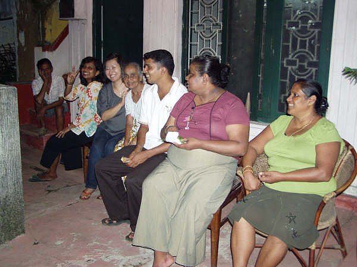
この留学プログラムは、料金の安さ、以前から興味のあったスリランカという国に滞在できる事、Beインターナショナルさまの柔軟かつ迅速な対応が信頼できたので参加を決めました。
全く不安や戸惑いはありませんでした。強いて言えば『安すぎて逆に大丈夫かな？』『本当にレッスンは受けられるのかな？』と思ってしまったことです。
ホストファミリーとの生活はとても楽しく、一生忘れる事のない充実した日々でした。どのファミリーも私を家族の一員として温かく迎えてくださり、なに不自由ない生活でした。
毎日色々な事を話し合い、今では『スリランカにも私のファミリーがいるんだ』と思える程、とても自然に生活できました。
少し戸惑ったのは一番最初のファミリーの家で、プライバシーがなかった事です。といっても突然部屋に入ってきたり私のいない時に部屋に入ったり・・・というくらいですが、少しビックリしました。
（だからといって特にトラブルがあった訳ではありませんでした。）
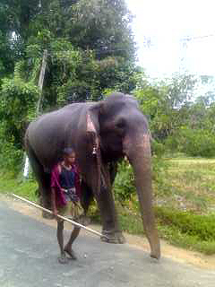
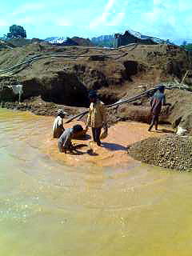
私はレッスンの時間を利用して先生とショートトリップをしました。
宝石の町、ラトゥナプラから世界自然遺産のシンハラージャ、そしてスリランカ最南端の町マータラを経由して世にも珍しいストルトフィッシングを見学、体験しゴールへ向かいました。
ラトゥナプラでは写真のような大きな穴を掘って人力で掘った砂利をひたすら洗い宝石の原石を探すという気の遠くなる作業をしている現場を見学しました。
いつ出るかわからない原石を、一攫千金を夢見て朝から一日中家族ぐるみで作業していました。
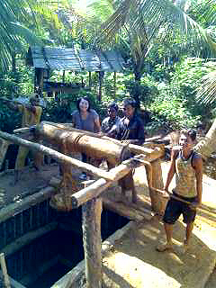
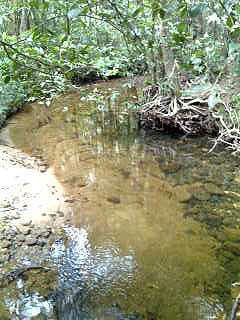
シンハラージャではスリランカにしか生息しないという鳥たちや植物をたくさん見ることができ、森からたくさんのきれいな空気を吸い、リフレッシュできました。
でもうっかり立ち止まると、ヒルの攻撃に遭うので常に動き続けなければならなく数日間の筋肉痛に見舞われました。
マータラで見たインド洋の美しさは忘れがたく、どの町・村もとても素晴らしくてその土地ならではの生活を見ることができました。
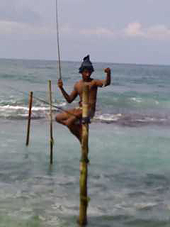
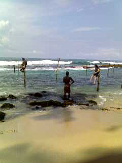
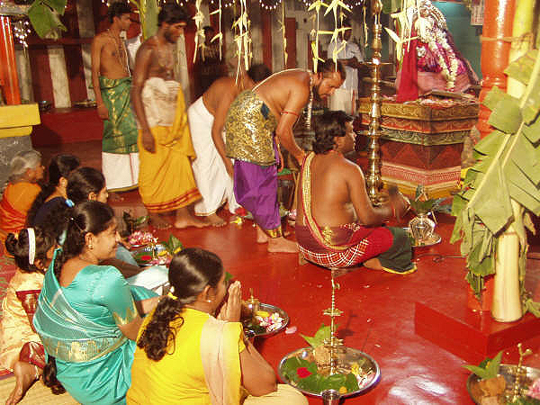
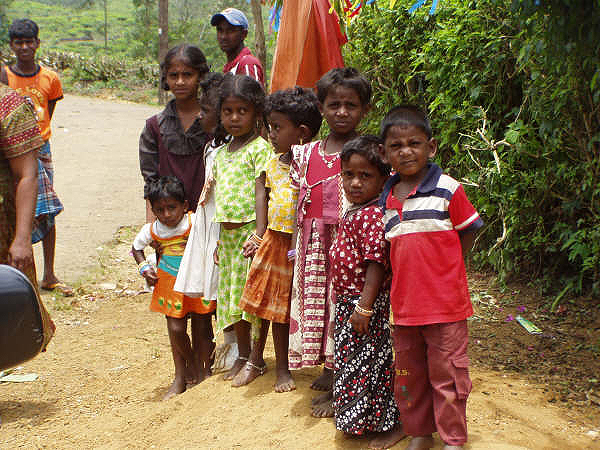
スリランカという国をひとことで言うと『温かい国』です。 どんな時でも周りの人にやさしく、家族間の愛情も深く、ブッダを崇拝し、人情に熱い！
その裏でスリランカが抱えている問題（LTTEなど）が悲しくうつりました。 それぞれの人種が互いに意見を主張し合っていることが内戦という形になったこと、日本も決して他人事ではないと感じます。
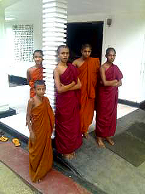
近所のお寺のお坊さんたち
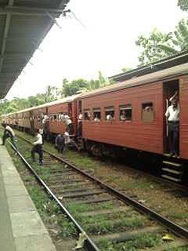
あとは『発展途上国という国がなぜ途上中なのか・・・。』という単純な私の疑問もとけました。
『なんでこんなカンタンな事ができないんだろう？』と色々な面で感じたり・・・日本では小学生でも考えつきそうな事もスリランカでは大人が考えつかないなど。マーネルさんいわく『学習、知識がないからだ』という。
日本のように便利になってほしいと思う反面、このままのスリランカでいてほしいと思う事・・・でも将来の子供たちに未来がないからとスリランカを出、アメリカやオーストラリアに出て行くスリランカ人が多いという事実もなんだか少し悲しく感じました。